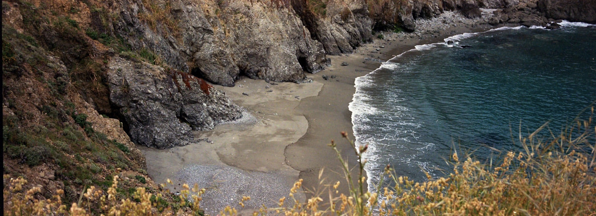

Mostly film. 35 mm on a Leica M3 and a Nikon 35Ti, panoramas on a Fuji TX-1; 6×6 on a Rolleiflex 2.8F; 4×5 on a large-format camera that also takes an Instax Wide back. Provia and Portra, and Kodak 5294 in 35 mm. I develop the film myself, scan it on an Epson V800, and print in the darkroom under an enlarger.
